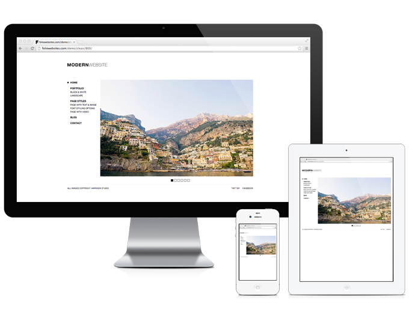
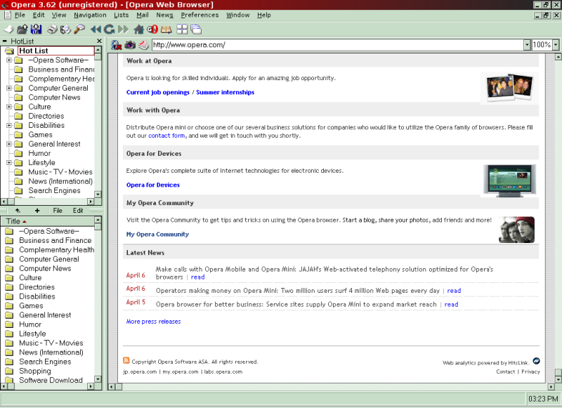
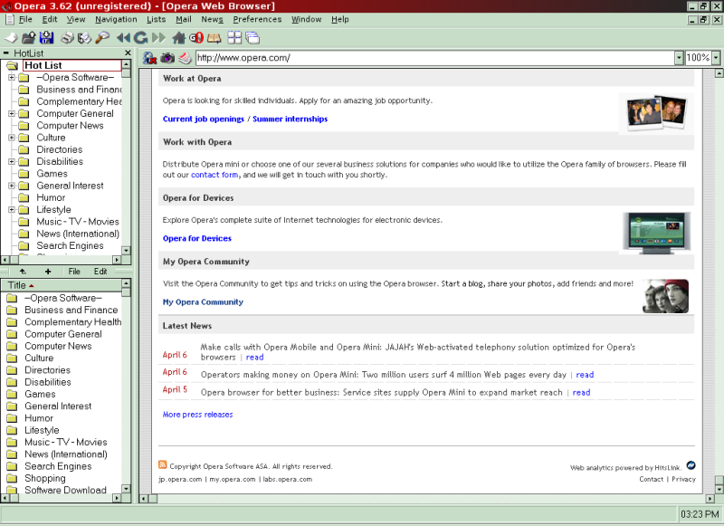

Web tabanlı uygulamaları, web sitelerini, mobil uygulamaları çeşitli cihazlar içerisinde görüntülemeyi sağlarlar
Tarayıcı Nedir?
Nereden Nereye?
90lar ve ilk tarayıcılar
WorldWideWeb (1990), sonradan Nexus adını aldı

Nereden Nereye?
90lar ve ilk tarayıcılar
Mosaic (1993), sonradan Netscape adını aldı

Nereden Nereye?
90lar ve ilk tarayıcılar
Internet Explorer (1996), Opera (1996)
 

Nereden Nereye?
2000ler
- Firefox (2002)
- Safari (2003)
- Chrome (2008)
Tarayıcıların Zamanı
İçerik Olarak Neler Değişti?
- Text tabanlı
- Grafik gösterebilme
- Flash animasyonlar
- Video
- Canvas
Altyapı Olarak Neler Değişti?
- SGML (Standard Generalized Markup Language)
- HTML
- JavaScript
- CSS
Modern Tarayıcılar Ne?
- Chrome
- Firefox
- Internet Explorer 9+
- Safari
- Opera
Avantajları
- Daha hızlı
- Daha güvenli
- Yeni teknolojilere destek
- HTML5
- CSS3
- JavaScript Uygulamalar
Yeni Teknolojiler
HTML5
- İçeriğe uygun semantik kodlama
- Canvas
- Media Playback
- Offline Apps
- Drag-and-drop
- Messaging
- Web Storage
Yeni Teknolojiler
HTML5
Yeni Teknolojiler
CSS3
- Media Queries
- Selectors Level 3
- Namespaces
- Flexbox
- Radius, Shadow, Gradient
- Animasyonlar
- Font Icons
Yeni Teknolojiler
CSS3
Yeni Teknolojiler
CSS3
Yeni Teknolojiler
JavaScript
- JavaScript kütüphaneler (jQuery, MooTools, Modernizr...)
- MV* kütüphaneler (Backbone, Angular, Knockout, Spine)
- Single Page uygulamalar
- AMD Loading
Yeni Teknolojiler
JavaScript
Yeni Teknolojiler
JavaScript
Geliştirme
- Rapid prototyping
- Sade kod yazımı
- Future Proof kodlama
- Syntax/Presentation/Behaviour ayrımı
Geliştirme / Rapid Prototyping
-
Bootstrap

-
Foundation
Geliştirme
Sade Kod Yazımı
<a href="#" class="button-holder"> <div class="button-left"></div> <div class="button-center"></div> <div class="button-right"></div> </a>
<a href="#" class="button"></a>